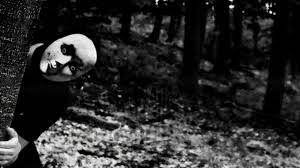

La siguiente leyenda puede variar, como es normal en la mayoría de las historias populares. Los protagonistas suelen ser una chica con un vestido o un chico con una capa, pero la trama es la misma. Desde FCINCO, nos quedamos con la joven.
La protagonista, cuyo nombre se desconoce, era una joven tímida. Por el trabajo de su padre, ella y su familia cambiaban constantemente de ciudad y de amigos.
En uno de esos tralados, un grupo de compañeros retó a la joven a una prueba de valentía: debía ir al cementerio de noche y clavar una nota en la última tumba del camposanto en la que decía "Yo estuve aquí".
La chica, con ansias de ser una más y poder integrarse rápidamente en el grupo, aceptó el reto y esa misma noche se dispuso a cumplir su tenebrosa misión.
Aunque el cuerpo le pedía correr y abandonar el juego, la joven saltó la valla. Caminó entre el frío mármol, las siluetas de las cruces y las sombras de los ramos de flores posados encima de las tumbas.
Cuando por fin llegó a la última tumba, sus ojos estaban empañados de lágrimas y sus manos temblaban por el miedo contenido. Con una chincheta clavó la nota en la que demostraba su valentía y al levantarse para salir corriendo, algo tiró de su falda, atrapándola.
La mañana siguiente, al no tener noticias de la joven, el grupo de chicos se dirigió al camposanto. Allí encontraron su cuerpo inerte, con la falda de su vestido clavada con una chincheta a la última tumba del cementerio. Había muerto... de miedo.